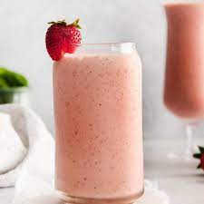

My Favorite Recipe
Strawberry, Banana, and Spinach Smoothie
Ingredients
- 3 cups of chopped frozen strawberries
- 1 cup of chopped frozen banana
- 2 cups of baby spinach leaves
- 1.5 cups of vanilla yogurt
- 3 cups of orange juice
Instructions
- Rip apart the spinach into smaller pieces, then put them in the bottom of the blender.
- Get a cutting board and cut up the frozen strawberries into smaller pieces until you have 3 cups of crushed strawberries. Toss them into the blender along with the spinach.
- Repeat the previous instruction but with the bananas. Cut the bananas up into smaller pieces until you have 1 cup and place them into the blender as well.
- Add the 1.5 cups of vanilla yogurt.
- Pour 3 cups of orange juice into the blender.
- Place the lind on top and start up the blender.
- After blending the ingredients for 10-20 seconds, take a thin spatula and stir the ingredients around so that the pieces on top of the pile get into the bottom of the blender where the blades are.
- Continue blending and stirring intermittently until smoothie is at preferred smoothness. Add more yogurt or orange if needed or wanted while you blend.